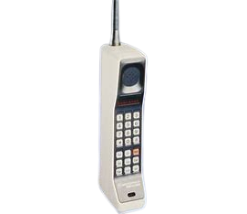
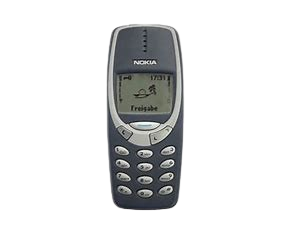
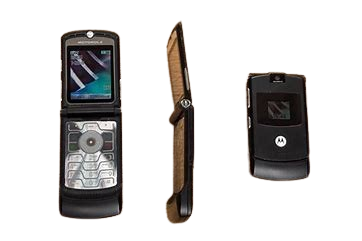
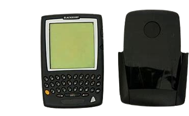
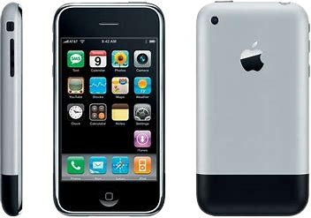

Motorola DynaTAC 8000X (1983)
El primer teléfono móvil comercial del mundo. Con un peso de casi 1 kg y una batería que duraba 30 minutos de conversación, costaba casi $4,000 USD.
Especificaciones:
- Pantalla: LED roja
- Batería: 30 minutos de conversación
- Peso: 793 gramos
- Memoria: Almacenaba hasta 30 números

Nokia 3310 (2000)
Uno de los teléfonos más icónicos y durables jamás creados. Vendió 126 millones de unidades y se hizo famoso por su resistencia y el juego "Snake".
Especificaciones:
- Pantalla: LCD monocromática
- Batería: Hasta 4,5 horas de conversación
- Peso: 133 gramos
- Características: Snake II, Compositor de tonos

Motorola RAZR V3 (2004)
Un teléfono que revolucionó el diseño con su perfil delgado y construcción en aluminio. Vendió más de 130 millones de unidades.
Especificaciones:
- Pantalla: TFT color de 2.2 pulgadas
- Cámara: VGA 0.3MP
- Peso: 95 gramos
- Características: Diseño tipo flip, cuerpo de aluminio

BlackBerry 5810 (2002)
Uno de los primeros smartphones que combinó capacidades de teléfono con email y navegación web. Revolucionó la comunicación empresarial.
Especificaciones:
- Pantalla: Monocromática
- Teclado: QWERTY completo
- Email: Soporte push email
- Conectividad: GPRS

iPhone 2G (2007)
El teléfono que redefinió lo que un smartphone podía ser. Introdujo la interfaz táctil moderna y el concepto de apps como las conocemos hoy.
Especificaciones:
- Pantalla: 3.5" táctil capacitiva
- Procesador: Samsung 620 MHz
- Memoria: 128 MB RAM
- Almacenamiento: 4/8/16 GB